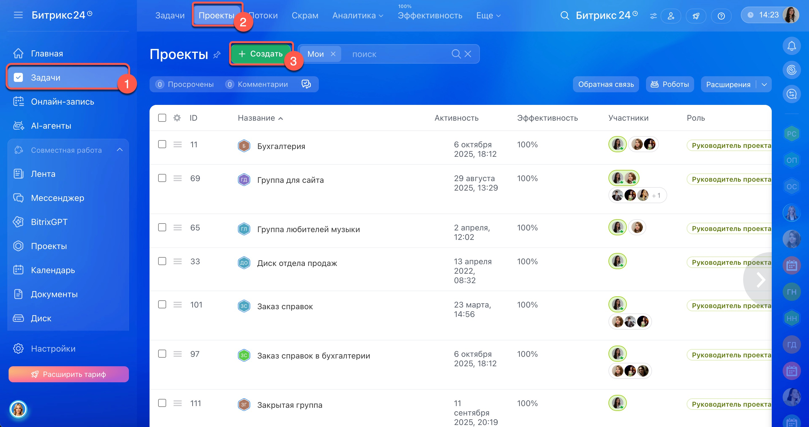
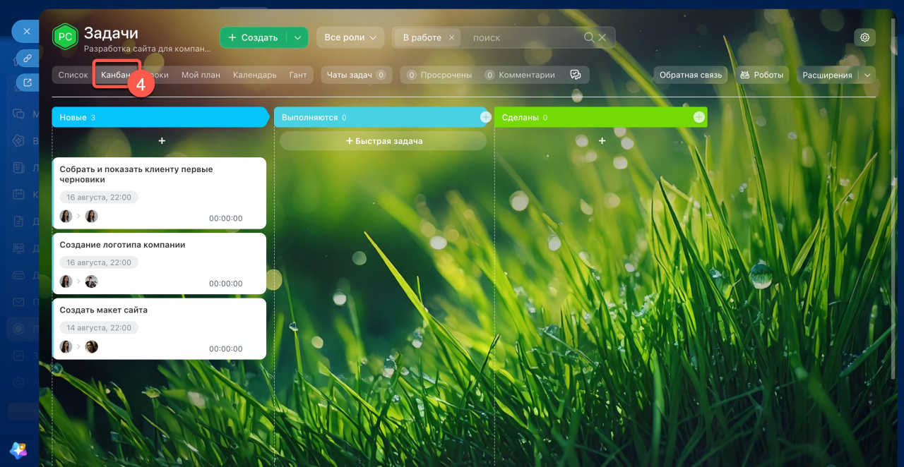
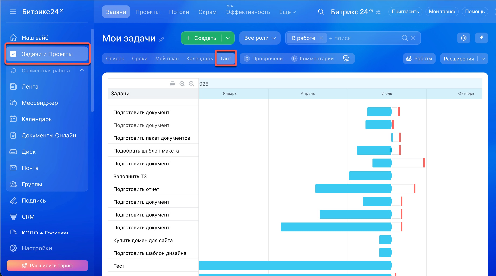
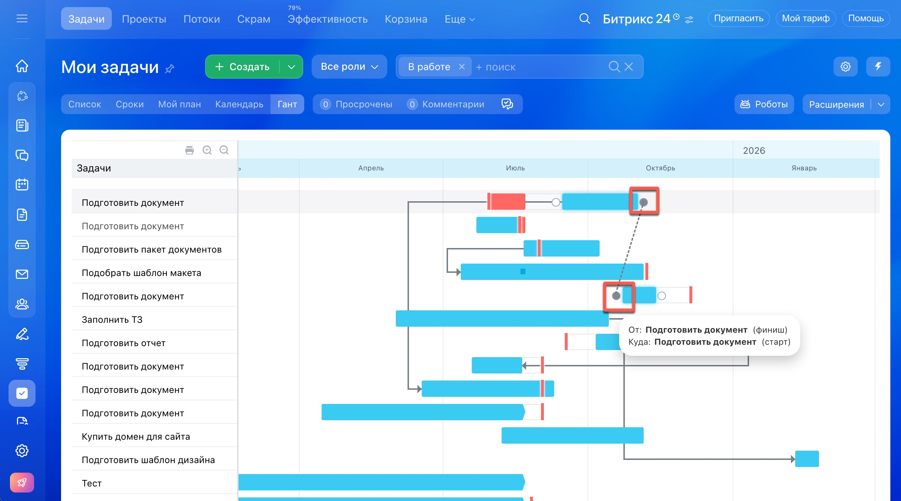
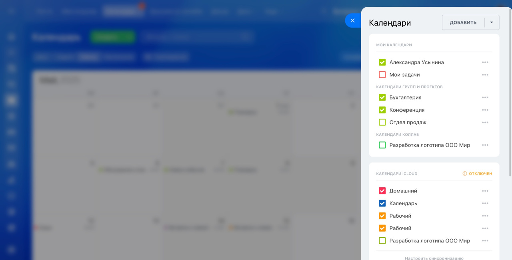
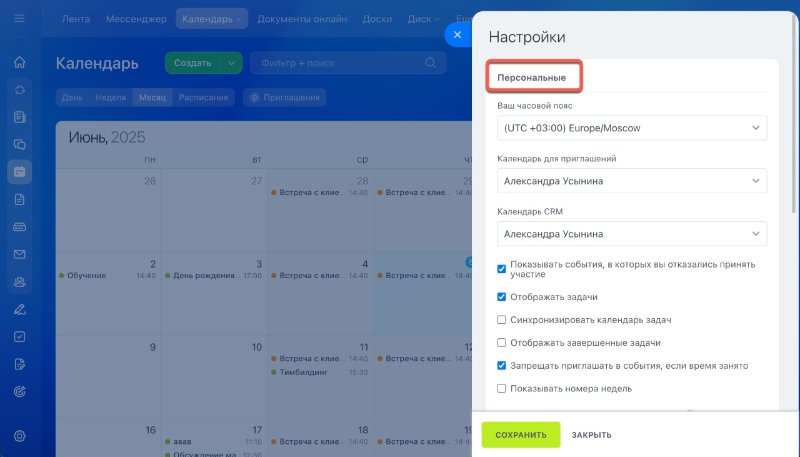
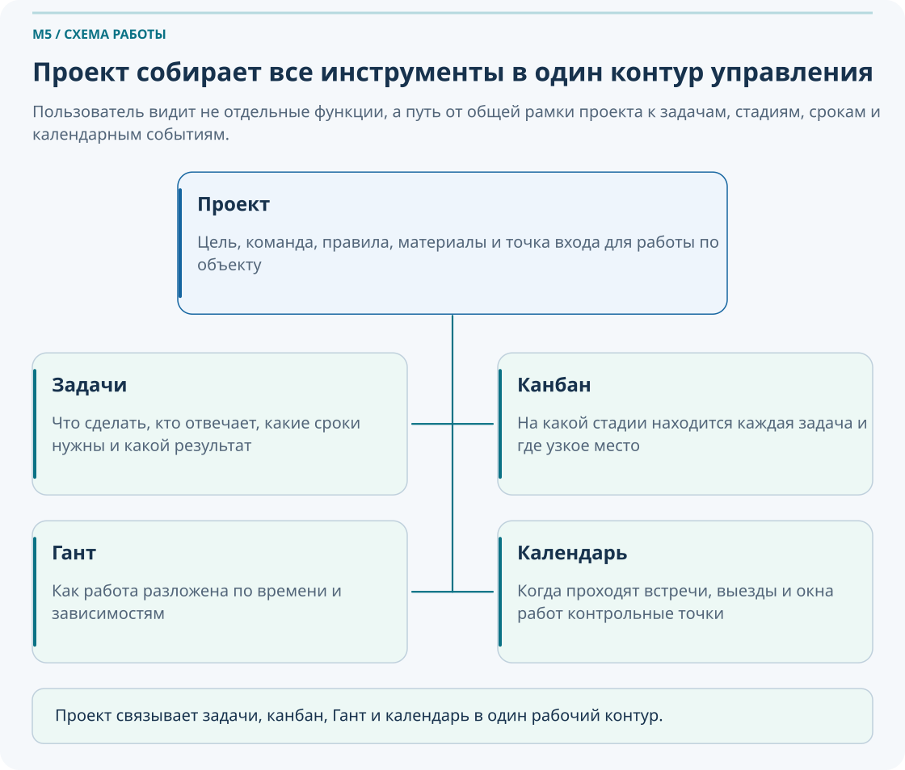
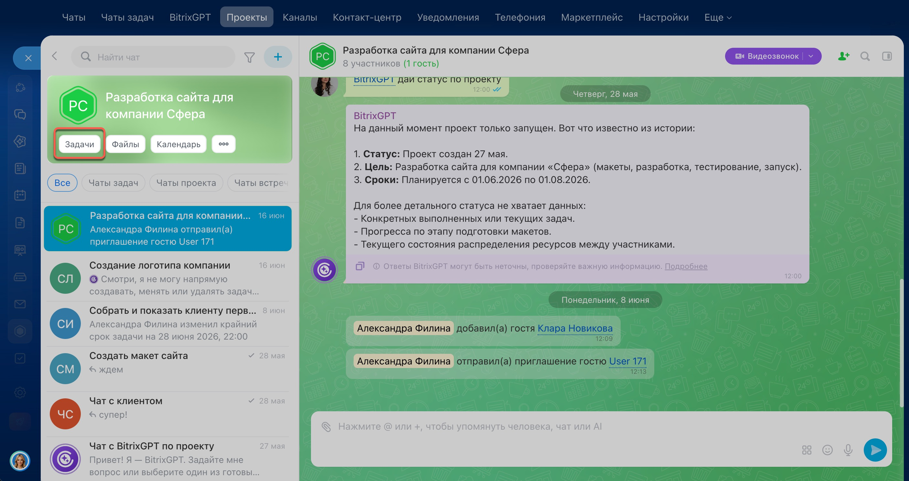
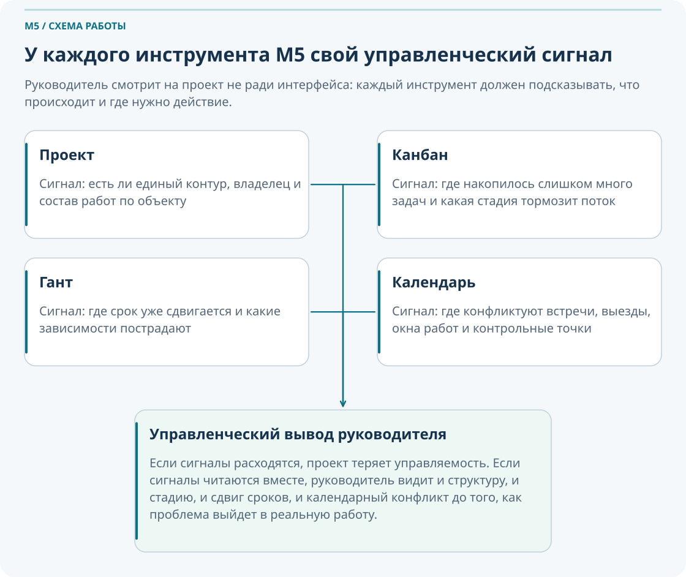

Проекты, канбан, диаграмма Ганта, календари
Этот модуль учит использовать проект в Битрикс24 как управленческий контур: где задачи распределены по ответственности, канбан показывает реальное движение, Гант отражает сроки и зависимости, а календарь связывает события, встречи, выезды и контрольные точки.
Что важно понять в M5
Проект нужен не ради самого проекта. Он нужен тогда, когда разрозненные задачи и чаты уже не дают руководителю видеть общую картину по объекту, срокам, стадиям и рискам.
Результат прохождения
сотрудник умеет собрать проект под объект, настроить стадии, читать Гант и планировать ключевые события
Что стоит запомнить
Проект отвечает: где живет вся работа по объекту? Задачи — что нужно сделать и кто отвечает? Канбан — на какой стадии работа? Гант — как работа разложена во времени? Календарь — когда происходят встречи, выезды и контрольные события?
Паспорт модуля
Место в курсе
после M1–M4
Входной уровень
пользователь понимает коммуникации, рабочие группы и задачи
Целевая аудитория
Сотрудники, руководители и участники рабочих процессов, которым нужно уверенно применять материал модуля в ежедневной работе.
Итоговый результат
сотрудник умеет собрать проект под объект, настроить стадии, читать Гант и планировать ключевые события
сотрудник умеет собрать проект под объект, настроить стадии, читать Гант и планировать ключевые события
1. Когда отдельных задач уже недостаточно и нужен проект
Откройте Проекты или Задачи → Проекты, выберите нужное пространство и его задачи. Порядок создания и проверки доступа описан в M3. Официальная инструкция.
Проект нужен там, где работа идет не одной задачей, а набором связанных задач по объекту, этапу, программе работ или инициативе. Если руководитель уже не может держать картину в голове, значит системе нужен общий контур управления.
Есть цель, сроки, владелец, несколько участников, этапы, задачи, события и зависимость одних работ от других. Если все это уже существует, но пока живет вразнобой, проект становится рабочей рамкой управления.

| Ситуация | Что выбрать | Почему |
|---|---|---|
| Одна небольшая разовая задача | Отдельная задача | Не нужен дополнительный управленческий контур |
| Несколько связанных задач по этапу или объекту | Проект | Нужно видеть ответственность, стадии, сроки и события в одном месте |
| Постоянная тема подразделения без финальной точки завершения | Проект для постоянной темы | Нужна стабильная среда с владельцем и регулярной ревизией; в новом интерфейсе используется тот же формат проекта |
Проект не должен создаваться ради одной мелкой задачи. Но и большой объект не должен вестись как набор случайных задач без общей структуры и владельца.
Назовите один рабочий объект или инициативу, где уже слишком много связанных задач для личного списка.
Определите: есть ли у этой работы цель, владелец, этапы, сроки и календарные события.
Сформулируйте, почему в вашей ситуации нужен именно проект, а не только несколько задач.
2. Канбан: как видеть реальное движение работы
Проверка статуса. Перенос карточки в колонку «Готово» сам по себе не доказывает завершение задачи: колонка отражает стадию вашего процесса. Откройте карточку, проверьте статус, результат и настройки роботов. Практика: сравните стадию и статус одной учебной задачи до и после перемещения. Справка по канбану.
Канбан нужен не для красоты, а чтобы быстро понимать, где застревают задачи, на какой стадии находится работа и где у команды появляются узкие места.
Колонка канбана — это стадия процесса, а не просто другой способ посмотреть на статус задачи. Канбан должен отражать реальную логику прохождения работы.

| Хорошая практика | Почему работает |
|---|---|
| 4–6 колонок для базового уровня | Доска остается читаемой и не расползается в хаос |
| Названия колонок соответствуют процессу | Команде понятно, что означает переход между стадиями |
| Доска обновляется регулярно | Иначе руководитель видит не реальность, а архив вчерашнего дня |
| Структуру колонок меняет не любой участник | Иначе канбан перестает быть управленческой системой |
Плохая канбан-доска
- Слишком много колонок без ясной логики.
- Названия размыты: «разное», «в работе 2», «потом».
- Никто не отвечает за структуру доски.
- Задачи неделями стоят в одной колонке без управленческого вывода.
Хорошая канбан-доска
- Стадии отражают реальный процесс.
- Переход по колонкам понятен всей команде.
- У застрявших задач есть причина и управленческое действие.
- Руководитель видит загрузку и узкие места.
Новый этап
В работе
На проверке
Готово
Откройте проект и переключитесь в канбан. Посмотрите, можно ли по доске понять, где сейчас стоит каждая задача.
Возьмите 8–10 задач и сократите возможные стадии до 4–6 понятных колонок.
Определите, в какой колонке задачи застревают чаще всего, и сформулируйте управленческое действие.
3. Диаграмма Ганта: как увидеть сроки, зависимости и сдвиги
Гант помогает увидеть проект во времени. Он нужен для вопросов «что когда начинается», «что от чего зависит», «какие задачи критичны» и «какой сдвиг потянет за собой другие работы».


| Понятие | Что означает | Почему важно |
|---|---|---|
| Start date | Плановая дата начала работы | Показывает, когда задача должна стартовать |
| End date | Плановая дата окончания периода работы | Позволяет видеть длительность задачи |
| Deadline | Точный срок завершения | Это контрольная дата, а не просто полоса на графике |
| Зависимость | Связь между задачами | Сдвиг одной задачи влияет на другие |
Если у всех задач одинаковые сроки, нет дат начала, зависимости не заданы и сама информация в задачах не обновляется, диаграмма становится бесполезной. Гант не заменяет дисциплину ведения задач.
Если согласование сдвинулось на три дня, какие следующие задачи тоже смещаются? Именно такие вопросы делает Гант полезным руководителю, а не просто визуальным графиком.
Откройте диаграмму Ганта и найдите задачу, у которой есть самая длинная полоса по времени.
Определите, какие задачи влияют на итоговый срок проекта и где возможен сдвиг.
Сформулируйте, что нужно сделать, чтобы не сорвать дедлайн, если одна из ключевых задач смещается.
4. Календари: как планировать события, окна работ и точки контроля
Календарь в M5 — это не просто список встреч. Это инструмент планирования событий, ресурсов, выездов, контрольных точек и взаимосвязи между проектной работой и реальным расписанием команды.
| Тип календаря | Для чего нужен |
|---|---|
| Личный календарь | Личное расписание, приглашения, рабочее время сотрудника |
| Календарь компании | Общие корпоративные события и доступные всем ориентиры |
| Календарь проекта или группы | Планерки, выезды, контрольные точки, окна работ по объекту |
| Календарь задач | Отображение задач по датам и дедлайнам |
| Календарь ресурса | Бронирование настроенных переговорных; учет техники и бригад зависит от принятого в компании решения |
Календарь связывает работу с реальным временем. Если в проекте есть выезд, окно отключения, планерка или контрольная приемка, их нужно видеть не только в описании задач, но и в событии календаря.


Откройте календарь проекта и создайте одно событие: планерка, выезд или контрольная точка.
Создайте набор из 3–5 событий, которые реально помогают управлять проектом.
Проверьте, нет ли у команды конфликта по ресурсам, выездам или времени встреч, и предложите корректировку.
5. Связка «проект — задачи — канбан — Гант — календарь»
Это главное методическое ядро M5. Пользователь должен понять не отдельные кнопки, а общую систему управления объектом.

Проект
Хранит общий контур работы: цель, команда, задачи, события и материалы.
Задачи
Отвечают за конкретную работу, срок и ответственность.
Канбан
Показывает, на какой стадии сейчас находится каждая задача.
Гант
Показывает временную логику проекта: даты, длительность, зависимости, сдвиги.
Календарь
Показывает встречи, выезды, окна работ и контрольные точки проекта.

Проект отвечает, где живет вся работа по объекту. Задачи — что нужно сделать и кто отвечает. Канбан — на какой стадии работа. Гант — как работа разложена во времени. Календарь — когда происходят встречи, выезды, окна работ и контрольные события.
Если задачи стоят в одной колонке — канбан покажет узкое место. Если сроки начинают смещаться — это будет видно в Ганте. Если встреча или выезд не запланированы, конфликт проявится в календаре. Вместе эти инструменты дают управленческую картину, которой не дает просто список задач.

6. Сквозная практика: «Управление учебным объектом от структуры до контроля сроков»
Этот маршрут проходит через весь модуль и превращает набор функций в управленческий сценарий.
Есть объект и разрозненные задачи
Руководитель понимает, что отдельных задач и чатов уже недостаточно.
Создаем проект
Определяем цель, владельца, сроки и команду проекта.
Раскладываем работу
Создаем набор задач по этапам и ответственности.
Настраиваем канбан
Собираем 4–6 стадий процесса и разносим задачи по колонкам.
Задаем даты
Определяем Start date, End date и дедлайны по ключевым задачам.
Читаем Гант
Проверяем сдвиги, зависимости и критичные задачи.
Создаем события
Планируем планерки, выезды, окна работ и контрольные точки в календаре.
Формулируем риски
Делаем управленческий вывод по канбану, Ганту и календарю.
7. Что делать, если…
Если неясно, нужен ли проект
Проверьте: есть ли у работы цель, сроки, этапы, команда, события и связанные задачи. Если да, проект почти наверняка нужен.
Если канбан не отражает реальность
Скорее всего, стадии сформулированы не по процессу или доска давно не обновлялась. Сократите структуру до 4–6 рабочих колонок и договоритесь, кто отвечает за поддержание актуальности.
Если в канбане задачи застряли в одной колонке
Это не проблема интерфейса, а управленческий сигнал. Нужно понять, что блокирует переход: люди, согласования, ресурсы или отсутствие решения.
Если диаграмма Ганта выглядит бесполезной
Проверьте, заданы ли Start date, End date, дедлайны и зависимости. Без этих данных Гант превращается в пустую картинку.
Если одна задача сдвинулась и тянет за собой другие
Проверьте зависимые задачи, обновите Гант, уведомите участников и скорректируйте календарные события, которые были привязаны к старым срокам.
Если событие есть в личном календаре, но команда его не видит
Создайте событие в календаре проекта или пригласите участников в нужный календарный контур. Для проектной коммуникации личного события недостаточно.
Если у бригады или ресурса конфликт в календаре
Нужно пересмотреть загрузку, временные окна и последовательность событий. Иначе конфликт проявится уже на объекте, а не только в системе.
8. Типичные управленческие ошибки
Создать проект, но не назначить владельца и не определить управленческую цель.
Использовать канбан как декоративную доску, которую никто не обновляет.
Заполнять Гант без реальных дат, зависимостей и контроля изменений.
Держать важные встречи и выезды только в личных календарях, а не в проектном контуре.
Смешивать в одном проекте слишком разные процессы без понятной структуры этапов.
Не связывать между собой задачи, стадии, сроки и события, из-за чего проект распадается на отдельные куски.
9. Самопроверка
Вопросы ниже проверяют не знание терминов, а понимание того, как использовать M5 для управления работой.
Вопросы
- Когда набора отдельных задач уже недостаточно и нужен проект?
- Какую управленческую роль выполняет проект в Битрикс24?
- Что показывает канбан-доска?
- Почему канбан нужно регулярно обновлять?
- Что показывают Start date, End date и Deadline в Ганте?
- Как сдвиг одной задачи может повлиять на другие?
- Зачем нужен календарь проекта, если уже есть задачи?
- Чем личный календарь отличается от проектного?
- Как связаны проект, задачи, канбан, Гант и календарь?
- Какой управленческий вывод можно сделать, если задачи скопились в одной колонке канбана?
Проверить свои ответы
- Когда есть цель, сроки, этапы, команда и набор связанных задач, которые нужно видеть в едином контуре.
- Проект становится общей рамкой управления объектом: людьми, задачами, сроками, событиями и материалами.
- На какой стадии находится работа и где есть узкие места процесса.
- Без регулярного обновления доска перестает показывать реальность и теряет управленческую ценность.
- Start date — старт работы, End date — конец планового периода, Deadline — точный срок завершения.
- Если задачи связаны зависимостями, сдвиг одной может сместить весь следующий участок графика.
- Календарь показывает встречи, выезды, окна работ и контрольные события, а не только сами задачи.
- Личный календарь — про расписание сотрудника, проектный — про события и координацию по объекту.
- Они вместе отвечают на вопросы где, что, на какой стадии, когда и с какими рисками идет работа.
- Это признак узкого места: нужно понять, что именно тормозит переход задач дальше по процессу.
10. Итоговое практическое задание
Сценарий: нужно организовать управление учебным объектом или программой работ в Битрикс24 так, чтобы руководитель видел структуру, стадии, сроки и ключевые события проекта.
- Определите, почему в вашей ситуации нужен именно проект.
- Создайте проект с понятным названием, целью, владельцем и составом участников.
- Создайте 5–10 задач по этапам работ.
- Настройте канбан-стадии под реальный процесс.
- Разнесите задачи по колонкам канбана.
- Задайте ключевым задачам Start date, End date и Deadline.
- Откройте диаграмму Ганта и определите рисковые задачи или возможные сдвиги.
- Создайте в календаре проекта 3–5 событий: планерка, выезд, окно работ, контрольная точка, приемка.
- Проверьте связку: задачи → канбан → Гант → календарь.
- Сформулируйте краткий управленческий вывод: где главный риск и что нужно сделать руководителю.
Критерии успешного прохождения
- Сотрудник умеет определить, когда нужен проект.
- Сотрудник собирает проект как единый контур работы, а не просто папку задач.
- Сотрудник умеет настроить и использовать канбан.
- Сотрудник умеет открыть и прочитать диаграмму Ганта.
- Сотрудник умеет создать календарные события проекта.
- Сотрудник понимает, как связать проект, задачи, канбан, Гант и календарь в единую систему контроля.
- Сотрудник способен сделать управленческий вывод по результатам обзора проекта.